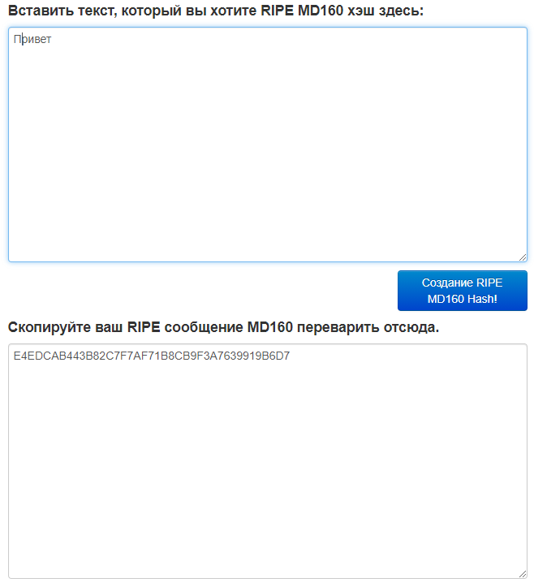
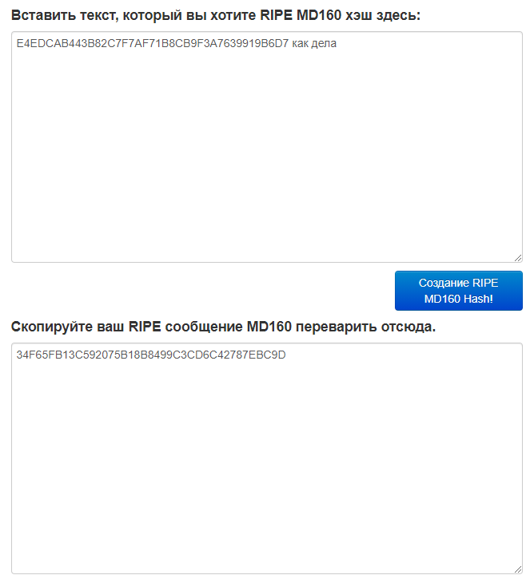
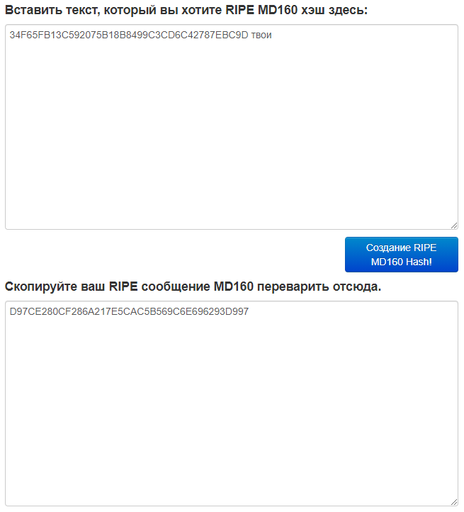

На заре финансового кризиса 2008 года неизвестный Сатоши Накамото дал технологии 2001 года прямое практическое применение. Эта технология называется блокчейн. Технология блокчейн применима не только к криптовалюте, но и к майнингу. У нее широчайший спектр возможностей. Из самого названия «Блокчейн» мы понимаем, что это цепочка блоков. Представим, что мы создали сеть блокчейн, и у нас есть первый блок, который содержит в себе некую информацию.
Представим, что информация в блоке содержит слово «привет». В блоке это выглядит таким вот сложным ключом:
Это называется хэш.
Когда мы хотим добавить информацию в наш блок, это выглядит следующим образом. Добавим к нашему хэшу E4EDCAB443B82C7F7AF71B8CB9F3A7639919B6D7 «как дела». Получился совсем другой хэш:
Хотим добавить еще информацию. Допустим, первая информация – это первая транзакция, вторая – это вторая транзакция, третья – это третья транзакция. Добавим ко второму хэшу 34F65FB13C592075B18B8499C3CD6C42787EBC9D слово «твои». Получилось это:
Добавляем любую информацию и получаем новый хэш.
Есть блок, который содержит в себе одной слово «привет» – это 1 хэш. Добавляем другие хэши, то есть выполняем транзакции. Каждые изменения в блоке – это новый хэш, который содержит в себе информацию еще других хэшей, то есть предыдущих действий, совершенных в блоке. Эта информация никогда и никуда не девается.
Для того, чтобы понять, как появляется новый блок, попробуем представить следующее. Хэши представляют из себя набор кодов, содержащих в себе информацию. С каждым добавлением этот набор кодов меняет свою структуру, усложняется. Представим это как уравнение. Каждый блок содержит цепочку уравнений. У нас есть блок, в котором есть хэш. Проводим транзакции и хэш растет. От этого блок становится сложнее. Майнер его майнит, и появляется новый блок.
Каждые новые блоки сейчас в сети Bitcoin появляются раз в 10 минут, когда в самом начале, когда Bitcoin только появился, скорость появления новых блоков могла быть и 17 минут, и 30 минут. Всё зависит от мощности, которая расшифровывает эти уравнения.